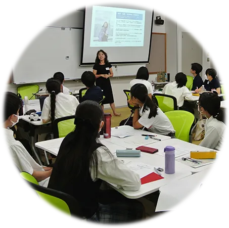
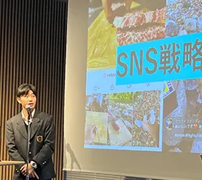
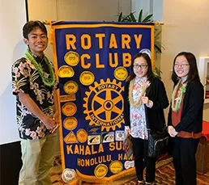
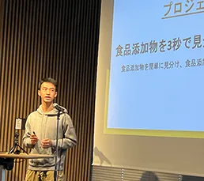

01
自分で稼ぐ力
原価・価格・利益といった商売の基本を知り、自分のアイデアで価値を生み出す経験をします。
総合型選抜・推薦入試／
留学奨学金のための起業講座
自分で稼ぐ力が、
最強の志望理由になる。
書類の書き方ではなく、書くべき「実績そのもの」を作る1年間。起業・クラウドファンディング・ビジネスコンテストに、中学生のうちから挑戦します。

お悩み
その答えは、書き方のテクニックではなく、
語るに足る「本物の経験」を持つことです。
WHY JUNIOR HIGH
実績づくりには時間がかかります。テーマを見つけ、形にし、人とお金を集め、言葉にする。
中1から始めれば、高校入学前に実績の土台ができます。
仕事とお金の基礎を学び、自分の「好き」と社会の課題を掛け合わせる。
商品・ブランディング・営業を考え、クラウドファンディングに挑戦。
高校入学前に、自分の言葉で語れる挑戦の記録が手元にある状態へ。
経験をもとに次の挑戦へ。ビジネスコンテストなど発表の場を広げる。
積み重ねた実績を、志望理由・自己PRとして整理する。
総合型選抜・推薦入試、留学奨学金の選考へ。
※ 上記は中1から受講した場合の一例です。受講は中学生〜高校2年生まで可能です。
CHANGE THE MEASURE
一般的な総合型選抜対策は、「書類の書き方」を教えます。
CEOキッズアカデミーは、書くべき「実績そのもの」を作ります。
3ヶ月の付け焼き刃では、プロの面接官は見抜きます。
— CEOキッズアカデミー 受験対策 学生起業コース 紹介ページより
3 POWERS
仕事やお金は、もらうものではなく「自分で創り出せるもの」。
その実感が、進路を選ぶ軸になります。
01
原価・価格・利益といった商売の基本を知り、自分のアイデアで価値を生み出す経験をします。
02
世の中の困りごとや自分の「好き」から仕組みを考え、クラウドファンディングで人とお金を集めます。
03
自分のビジネスを人に説明し、仲間を巻き込む。1年を通して「自分の言葉で伝える力」を磨きます。
CURRICULUM
基礎から実践へ、段階を踏んで進みます。各フェーズ12レッスン。
6 MONTHS MENTORING
個別クラウドファンディングサポートと起業アドバイス。
クラファンでしっかりと実績を出すまで伴走します。
何のために、誰に届けるのか
目標とリターンを設計する
クラファンを立ち上げる
人とお金を動かす
集めた金額・応援者数が
自分の数字として残る
※ 個別サポートの実施時期は、生徒の学年に応じて決定します。
ROADMAP
※ 月次の内容は目安です。最新の日程は申込ページでご確認ください。
RESULTS
総合型選抜・推薦入試や留学など、公式サイトで公開している合格・進学先です。



※ 公式サイト掲載の生徒の声より。 合格・進学先は過去の受講生の実績であり、合格を保証するものではありません。
INSTRUCTOR
CEOキッズアカデミー 代表／ファウンダー
仕事やお金はもらうものではなく、「自分で作り出せるもの」。世界のどこででも通用する「稼ぐ力」を育てていきます。
— 公式サイト 講師メッセージより要約
CEOキッズアカデミーは、ハワイから生まれた起業家教育プログラムです。
FLOW
講座の内容と進め方、総合型選抜の考え方をご案内します。
内容にご納得いただけたら、お申し込みください。
Zoomで受講スタート。最新の開講日程は申込ページでご確認ください。
PRICE & OUTLINE
| 講座名 | 総合型選抜・推薦入試／留学奨学金のための起業講座 |
|---|---|
| 対象 | 中学生〜高校2年生(中1スタート推奨) |
| 内容 | 全48レッスン ＋イゲット千恵子による個別起業サポート6か月伴走(個別クラファンサポート・起業アドバイス) ※ 個別サポートの時期は学年に応じて決定 |
| 形式 | オンライン(Zoom)／月2回×2時間／12か月 |
| 定員 | 各クラス6名 |
| 受講料 | 540,000円(月あたり45,000円相当) |
| 入会金 | 15,000円(税抜) |
| 教材費 | 3,000円(税別) |
| お支払い | 分割払いはご相談ください |
| 次期開講 | 最新日程は申込ページでご確認ください |
FAQ
実績づくりには時間がかかります。起業やクラウドファンディングは、テーマ探しから形にするまで段階を踏む必要があるため、早く始めるほど挑戦の回数と選択肢が増えます。
仕事とお金の基礎から始め、商品・ブランディング・営業、クラウドファンディング、事業計画、ビジネスコンテストでの発表までを段階的に学びます。
講座内で、手元にお金がなくても始められる起業の考え方や、クラウドファンディングによる資金調達を扱います。
本講座は学校や学習塾の代わりではなく、「実績」と「自分の軸」を作るための講座です。学力対策と併用していただけます。
合格を保証するものではありません。志望理由や自己PRの土台となる実績と、自分の言葉で語れる軸を作るための講座です。
オンライン(Zoom)で、月2回・1回2時間、1年間受講します。
個別クラウドファンディングサポートや起業アドバイスを、イゲット千恵子が直接行います。実施時期は学年に応じて決定します。
受講料540,000円、入会金15,000円(税抜)、教材費3,000円(税別)です。分割払いはご相談ください。
各クラス6名です。
中学生〜高校2年生です。中1からのスタートをおすすめしています。
月2回のオンライン受講のため、通学時間がかかりません。補講・録画の有無は説明会でご確認ください。
講座名のとおり、留学奨学金の選考も対象としています。具体的な活かし方は説明会でご案内します。
保護者の方の関わり方については、説明会でご案内します。
契約書面の定めに準拠します。詳細はお申し込みページでご確認ください。
まずは無料セミナー・説明会にお申し込みください。講座の内容や進め方を詳しくご案内します。
中学生の今が、いちばん時間のある時。
まずは無料セミナー・説明会で、1年間の進め方を聞いてみてください。